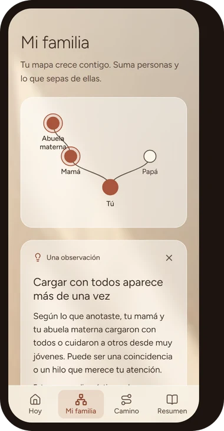

No quieres seguir repitiendo una historia que nunca elegiste.


Arma tu mapa familiar en 5 minutos y recibe tu primera observación gratis. Después, un camino guiado de 21 días para ver qué se repite en tu familia.
A veces sabes que algo se repite. Lo difícil es comprenderlo.
- Hay situaciones en tu vida que te gustaría entender mejor.
- Algunas dinámicas familiares siguen presentes en tu manera de relacionarte.
- Quieres mirar tu historia con más conciencia y encontrar nuevas formas de avanzar.
No necesitas tener todas las respuestas para empezar a hacerte preguntas diferentes.
Tu historia tiene muchas capas. Puedes empezar por una.
Explorar tu historia familiar puede abrir un espacio para observar los vínculos, las experiencias y las dinámicas que han formado parte de tu vida.
Sanando Mi Historia Familiar está pensado para acompañarte en esa exploración con las herramientas que incluye la experiencia.
Tu mapa y un camino de 21 días, a tu ritmo.
Una aplicación que se usa desde el navegador de tu celular o computador. Incluye:
- Tu mapa familiarUbicas a las personas de tu familia y anotas lo que sabes de cada una. El mapa crece contigo.
- Observaciones sobre lo que anotasteLa app te muestra qué se repite entre las personas de tu mapa, con calma y sin diagnósticos.
- Camino de 21 díasCada día, de 5 a 10 minutos: algo para mirar, un ejercicio guiado, una pregunta para tu diario y una acción pequeña.
- Tu diario privadoEscribes lo que quieras. Solo tú lo ves.
- Tu resumen finalTu mapa, lo que descubriste y las acciones que hiciste, todo en un solo lugar.
Es un espacio de reflexión y autoconocimiento: no es terapia ni sustituye la atención profesional.
Empieza de una forma sencilla.
- 1
Armas tu mapa familiar en unos 5 minutos y recibes tu primera observación, gratis.
- 2
Si quieres seguir, pagas una sola vez en Hotmart y creas tu clave con el correo que recibes.
- 3
Haces tu camino de 21 días a tu ritmo, sin presión y sin culpa si te saltas un día.
Mira lo que encontrarás dentro.

Tu día de hoy
Un paso a la vez, de 5 a 10 minutos.

Mi familia
Tu mapa y lo que se repite en él.

Camino de 21 días
Tres semanas: mirar, entender y dar un paso distinto.

Cada día
Ejercicio guiado, diario y una acción pequeña.

Tu resumen
Lo que descubriste y lo que hiciste.
Desliza para ver más →
De personas que usaron la primera versión.


Tu próximo paso puede empezar aquí.
Tu mapa familiar y un camino guiado de 21 días para ver qué se repite en tu familia y dar un paso distinto.
- Tu mapa familiar, que crece contigo
- Observaciones sobre lo que anotaste
- Camino de 21 días, con ejercicios guiados
- Tu diario privado
- Tu resumen final
- Pago único, sin mensualidades
Cómo empiezas: armas tu mapa y ves tu primera observación gratis. Si quieres seguir, pagas en Hotmart y creas tu clave con el correo que recibes.
Qué necesitas: un celular o computador con conexión a internet.

Garantía de 7 días
Si no es para ti, puedes pedir la devolución del 100% de tu dinero dentro de los 7 días siguientes a tu compra, a través de Hotmart.
Preguntas frecuentes
¿Qué es Sanando Mi Historia Familiar?
¿Qué incluye?
¿Es gratis empezar?
¿Quién ve lo que escribo?
¿Cómo recibo el acceso después de comprar?
¿Es terapia?
¿Puedo avanzar a mi propio ritmo?
¿Cuál es el precio?
¿Cómo funciona la garantía de 7 días?
No tienes que comprender toda tu historia hoy. Puedes empezar por mirarla.
Date un espacio para ver tus vínculos, entender lo que se repite y dar un paso distinto, a tu ritmo.
Quiero empezar mi mapa